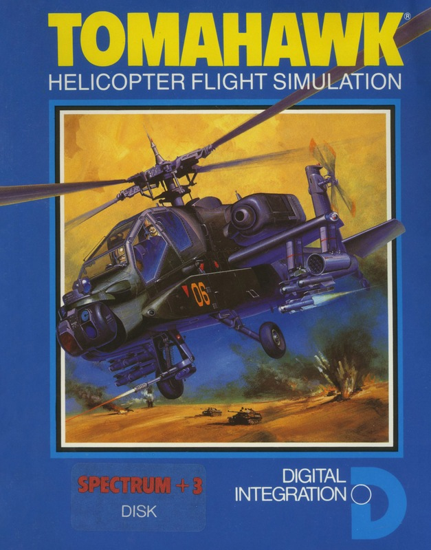
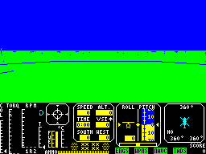
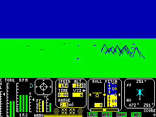

Tomahawk


{kind=link}

| Publisher: | Digital Integration |
| Price: | £9.95 |
| Year: | 1985 |
| Source: | CRASH, Issue 23 |

Following the success of Digital Integration’s Fighter Pilot based on the Tomcat, Dave Marshall sat down and studied the specifications for the Hughes Apache Advanced Attack Helicopter. Now, after a long wait, the fruits of his labours are finally available with the release of Tomahawk, the helicopter flight simulator which puts you in control of one mean machine.

Once you’ve got past the Lenslok the main menu is displayed, which allows you to choose from a range of flight options and weather conditions:
Flying Training — this helps you become familiar with the helicopter instruments and develop ground attack skills;
Combat — which puts you in a battlefield scenario with live hostile targets;
Day or Night — at night there is no artificial horizon and your view is limited to the pilot’s night vision system;
Clear or Cloudy — you can choose an overcast sky for instrument flying;
Cloudbase — selectable cloudbase, you chose the height at which you wish the clouds to appear if any are desired;
Crosswinds and Turbulence — for the experienced pilot. Allows for variable crosswinds and turbulence effects;
Sound — if set to ON then it mainly consists of effects generated by the rotor blades;
Pilot Rating — effectively the skill level option. There are four choices ranging, from the Trainee to Ace;
Controls — joystick or keys option. Allows for two ports to be used on Interface 2 for enhanced helicopter control.
You view the game from the cockpit. The top half of the screen is dedicated to the horizon and any features that might appear on the landscape (or the map, in map mode). The lower section of the screen takes the form of an instrument panel which displays the status of all the flight controls. These consist of bar scales for throttle position, fuel, engine torque, turbine and rotor RPM, engine temperature and collective position indicator. There are also readouts on altitude, time to target, ground position, speed in knots and vertical speed. Also featured on the instrument panel is the artificial horizon. This gives information on roll and pitch, while to the right of this is the Doppler Navigation/radar; using this it is possible to find your way to other landing pads as well as track enemy targets.
At your disposal are three types of weapons: Guns which have a range of about 2000 ft; Rockets — the Apache is equipped with 38 of these (19 each side) and they have a range of 4000 ft; Missiles are laser guided and automatically lock on to the target. You only have 8 of these. Each type of weapon is controlled by a different type of sight.

When in combat mode there are a number of possible targets such as tanks, field guns and enemy helicopters all of which are depicted in 3D vector graphics. Fighting is not easy and it is advisable to train for quite a while before going into combat mode. As well as using the tracking system, the map is in constant use in combat, so it is necessary to learn how to fly ‘blind’, without the graphic representation of the horizon.
The number of variables that can be set on the main, option screen allows you to almost redefine the game. If you get bored playing one way, for instance, you can make the game a lot tougher by selecting a cloudy option and adding in crosswinds and turbulence.
CRITICISM
‘When Fighter Pilot was first released I had just bought my Spectrum and remember thinking what an ace simulation it was. Now, almost 2 years later, the sequel has been released and it is every bit as good as the original. My first impressions were that it looked just like Fighter Pilot but after playing it for a while, you realise that it has been improved a lot. The graphics are very good with nice representations of enemy tanks and helicopters. The only real problem that I had with the game was that it was a bit tough to get right into — but if it wasn’t so tough then it wouldn’t be so realistic. I would definitely recommend this game to anybody who is keen on simulations. Arcade addicts would find it a touch boring, perhaps.’
‘This has to be one of the most awaited proggies ever: the development time was even longer than The Great Space Race. Well the end product is certainly better than Legend’s little problem and all in all a very competent flight simulator indeed. The best thing about Tomahawk is that it’s instantly accessible. I found it very easy to power up and fly around with practically no skill involved at all. As you get into the game and start using the combat options, things get more complex and a fair bit of practice will be required. The graphics move fairly well considering the complexity of some of the shapes that are handled. At one point, though, I’m sure I managed to fly through a mountain.. Overall a very good simulation indeed, even if it is a mite late. Non-flight freaks should see before buying, but flight maniacs will love it.’
‘This is the sort of game I couldn’t honestly recommend to someone who likes sitting down to a game which can be competently played instantly. As with most flight simulators, practice makes perfect. The 3D works pretty well once you get into the air and the update on the horizon is about the quickest you’ll get on the Spectrum, considering everything else the program is doing. The multitude of missions and combat sequences must make Tomahawk potentially the most durable program yet to be released on the Spectrum. The instructions are excellent and show you in detail how you can fly the Apache. Perhaps Digital Integration should have made more of them — a bigger box with glossier bumph would have added even more finesse to an already brilliant program. If you liked Fighter Pilot then this is the natural progression; if you’ve never seen it, give this one a go — it could well get you hooked!’
COMMENTS
| Control keys: | Q decrease collective, A increase collective, Z/Caps Shift rudder left/right, C combat mode, N next objective, P select weapon, 7/6 nose down/up, 8/5 roll right/left, 0 fire button, W/S open/close throttle |
| Joystick: | Interface 2, Kempston, Cursor |
| Keyboard play: | Lots of keys but quite a good response |
| Use of colour: | Not a lot of colour but generally well used |
| Graphics: | Nice vector graphics |
| Sound: | Limited but put to good use |
| Skill levels: | 4 |
| Screens: | Massive playing area |
| General rating: | A very good, very realistic simulation but it may not appeal to arcade players. |
| Use of computer: | 93% |
| Graphics: | 93% |
| Playability: | 89% |
| Getting started: | 86% |
| Addictive qualities: | 95% |
| Value for money: | 92% |
| Overall: | 93% |